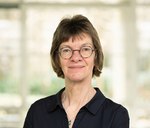

The Open Science Community Nijmegen (OSCN) brings together researchers, students and professionals committed to making research more transparent, reproducible and collaborative.
Open Science Community Nijmegen (OSCN) is a bottom-up network of researchers across Nijmegen who are passionate about making Open Science the norm in scholarly practice. Guided by values of openness, fairness, diversity, and inclusivity, we aim to foster a more open research culture by connecting people and sharing knowledge.
Our goals are to engage researchers with Open Science, support them in exploring and adopting open practices, and empower them to help shape research culture, infrastructure, and policy. We do this through events, workshops, and discussions that bring the community together in practice.
OSCN is part of the national Open Science Communities Netherlands (OSC-NL) and the International Network of Open Science and Scholarship Communities .
Radboud University

Radboud UMC

Radboud University

Radboud University

Max Planck Institute